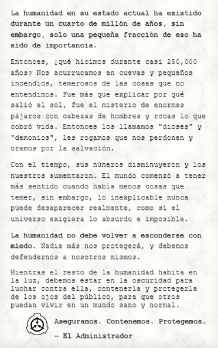

¿Que es la SCP Foundation?
Operando clandestinamente y en todo el mundo, la Fundación opera más allá de la jurisdicción, facultada y confiada por todos los principales gobiernos nacionales con la tarea de contener objetos anómalos, entidades y fenómenos. Muchas de estas anomalías representan una amenaza significativa para la seguridad global al amenazar con daños físicos o psicológicos. Todos ellos socavan las leyes naturales en las que las personas del mundo confían implícitamente.
La Fundación opera para mantener la normalidad, de modo que la población civil mundial pueda vivir y continuar con su vida cotidiana sin temor, desconfianza o duda en sus creencias personales, y para mantener la independencia humana de la influencia extraterrestre, extradimensional y otras influencias extranormales.
Secure
La Fundación asegura anomalías con el objetivo de evitar que caigan en manos de agencias civiles o rivales, a través de una extensa observación y vigilancia y actuando para interceptar tales anomalías lo antes posible.
Contain
La Fundación contiene anomalías con el objetivo de evitar que su influencia o sus efectos se propaguen, ya sea reubicando, ocultando o desmantelando tales anomalías o suprimiendo o impidiendo la difusión pública del conocimiento de las mismas.
Protect
La Fundación protege a la humanidad de los efectos de tales anomalías, así como de las anomalías mismas hasta el momento en que se entiendan completamente o se puedan idear nuevas teorías de la ciencia basadas en sus propiedades y comportamiento. La Fundación también puede neutralizar o destruir anomalías como una opción de último recurso, si se determina que son demasiado peligrosas para ser contenidas.
¿Que es un SCP?
Un SCP (“Special Containment Procedures” o “Procedimientos Especiales de Contención” en español) se refiere a un objeto, entidad, lugar, fenómeno o ser anómalo que viola las leyes naturales y que, si no se contuviera, representaría una amenaza para la humanidad o la normalidad de la realidad.
Clases de Objetos
A todos los objetos anómalos, entidades, y fenómenos que requieren de Procedimientos Especiales de Contención se les asigna una Clase de Objeto para favorecer las prioridades de investigación o presupuestarias, entre otras consideraciones. La clase asignada a un objeto se determina generalmente por un número de factores, pero más importantemente por la combinación de las dificultades para contenerlo, así como el peligro que representa para el personal de La Fundación y la humanidad en general.
La clasificación particular de una anomalía está sujeta a la actualización y modificación, así como la investigación y el conocimiento del objeto, entidad, o fenómeno.
Clases Primarias
Estas son las Clases de Objetos más comunes asignadas a las anomalías, y constituyen la mayor parte desde La Base de Datos de La Fundación.
Ultra Seguro
La clase Ultra Segura es un clase donde los SCPs no son un peligro para la humanidad pero su apariencia es extraña por eso las clases ultra seguras esta en la fundación SCP.
Seguro
Los Objetos Clase-Seguro son aquellas anomalías que son entendidas lo suficientemente bien como para contenerlas de forma confiable y permanente, o de otra manera, no activan sus efectos anómalos por sí mismos o no intencionalmente.
Euclid
Los Objetos Clase-Euclid son anomalías que no son lo suficientemente entendidas o inherentemente predecibles como para que la contención fiable no sea confiable o posible, pero no suponen una amenaza tan grande como para entrar en la Clase-Keter.
Keter
Los Objetos Clase-Keter son anomalías que presentan una amenaza hostil para la seguridad del personal de La Fundación y el resto de la humanidad, o bien requieren de Procedimientos de Contención extensos y complejos para ser contenidos o que no pueden ser plenamente comprendidos por la tecnología y conocimiento actual de La Fundación.
Clases Secundarias
Neutralizado
Las anomalías Neutralizadas son aquellas que ya no son anómalas, ya sea por que fueron intencionalmente o accidentalmente destruidas, desconectadas, o de lo contrario, ya no presentan efectos anómalos.
Explicado
Las anomalías Explicadas son aquellas que son completamente comprendidas hasta el punto en que sus propiedades anómalas ya no son consideradas sobrenaturales gracias a los avances científicos, o que han sido difundidas de forma pública de tal manera que la contención ya no es posible.
Clases Esotéricas
Las siguientes Clases de Objetos caen fuera del ámbito de clasificación estándar.
Thaumiel
Los objetos Clase-Thaumiel son aquellas anomalías que son altamente clasificadas y extremadamente raras que son utilizadas por La Fundación para contener o contrarrestar los efectos de otras anomalías altamente peligrosas, sobre todo objetos Clase-Keter.
Apollyon
Los objetos Clase-Apollyon son aquellas anomalías las cuales presentan un escenario apocalíptico inevitable, no hay métodos de contención para estás anomalías debido al poder y amenaza que representan.
Maksur
El ítem ha sido separado en varias partes anómalas que deben mantenerse separadas, Si no entendiste pues el SCP se a separado en varías secciones y estas Secciones deben permanecer separas por Orden del Consejo O5 o por que pasara algo malo si están juntas.